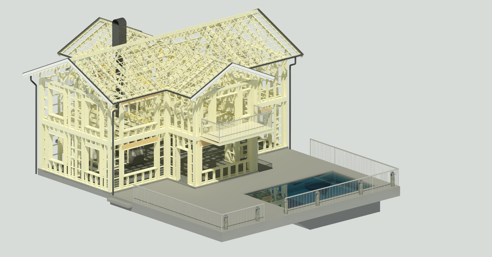
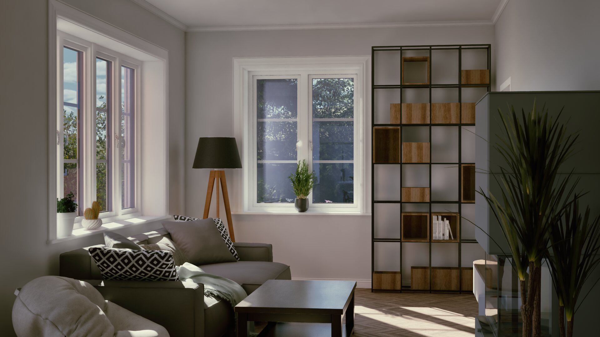
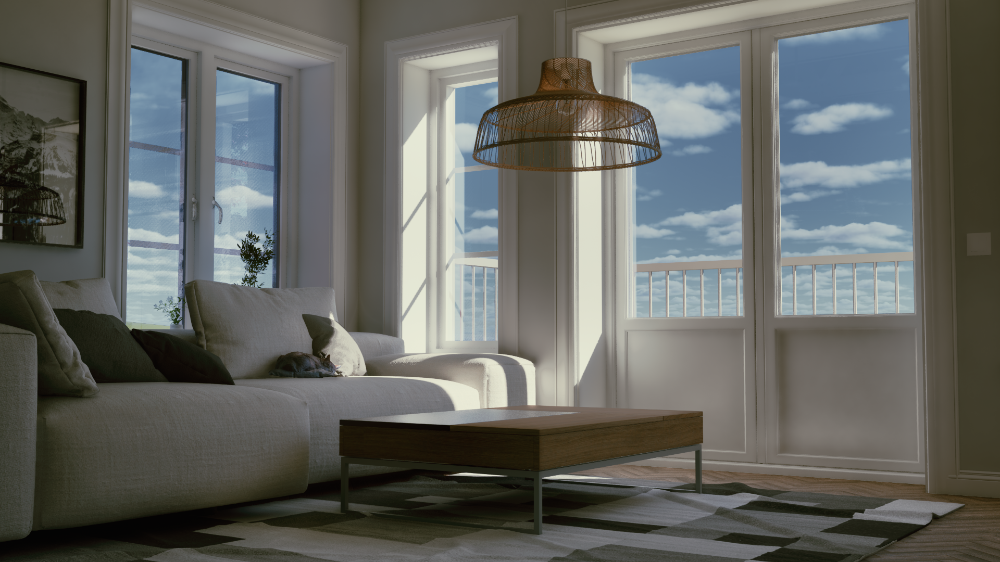
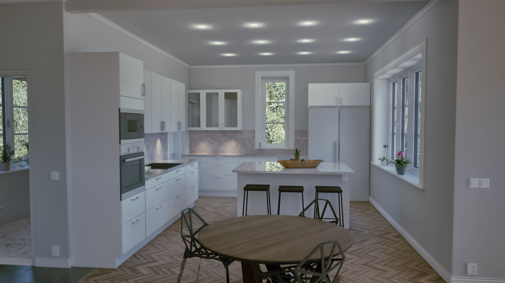
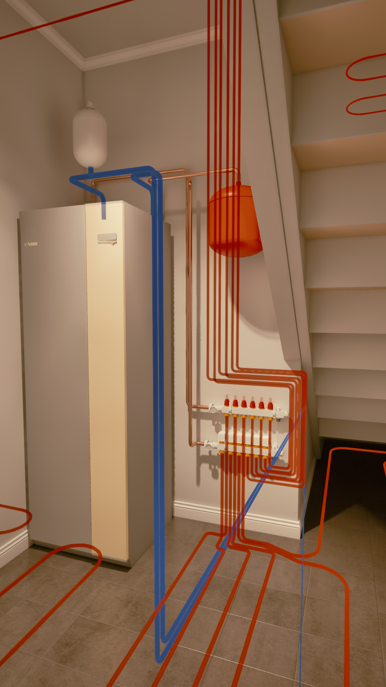

Hej! Jag heter Nick Westin och studerar till civilingenjör i samhällsbyggnad på KTH i Stockholm, med inriktning mot byggnadskonstruktion. Jag är särskilt intresserad av konstruktion, programmering och problemlösning. På fritiden gillar jag att lära mig nya saker, bygga projekt och träna – allt från längdskidor och alpint till vattenskidor, kajak och snickeri.
Ett urval av studie- och konstruktionsprojekt från KTH.
Conceptual Bridge Design Project
KlartVT 2026AF2201 Bridge DesignRevit · AutoCAD
Suspension Bridge design: project in the course AF2201 Bridge Design. The task was present a conceptual bridge with a main span of 675 meters. The project included calculations for the main cables, hangers, and deck. The project also involved creating detailed drawings and a 3D model of the bridge using Revit and AutoCAD. The design focused on ensuring structural integrity and aesthetic appeal.
Småhusprojektet
KlartRevit · Twinmotion
Uppgift att ta fram förslag till småhus. Största del Revit och Twinmotion, även beräkningar för huset och konstruktionsritningar.





Dagbok
Blogg
Välkommen till bloggen! Här händer lite allt möjligt – sommar i skärgården, segling, projekt och plugg.
Inga inlägg matchade sökningen.
Meriter
CV, Kurser & Personligt Brev
Här kan CV läsas direkt på sidan – nedladdning finns nedan, liksom en lista över tagna kurser.
Civilingenjörsutbildning i samhällsbyggnad på KTH (år 1–2)
Flervariabelanalys SF1626Tillämpad statistik SF1910Algebra och geometri SF1624Hus och anläggningar AF1002Stadsutveckling och transportsystem AH1030Teknisk mekanik SG1117Projektledning och BIM inom samhällsbyggandet AI1802Samhällsbyggandets regelsystem AI1525Geovetenskap och geoteknik AL1302Naturresursteori AL1301GIS och mätningsteknik AG1314Samhällsbyggnadsekonomi AI1128Numeriska metoder och grundläggande programmering SF1516Samhällsbyggnadsprocessen AI1527Envariabelanalys SF1625
Bygg och byggprojektledning – BBP (år 3)
Byggmaterial, grundkurs AF1301Strömningsmekanik för samhällsbyggnad AE1601Byggfysik AF1402Byggnadsmekanik, grundkurs AF1006Examensarbete inom samhällsbyggnad, grundnivå AF102XByggkonstruktionslära, grundkurs AF1005Geoteknik med grundläggning AF1601
Master – Civil and Architectural Engineering (år 4–5)
Strukturanalys med finita elementmetoder (FEM) AF1024Design av träbaserade hybridkonstruktioner AF2302Brokonstruktion AF2201Stål- och träbyggnad AF2213Betongbyggnad AF2101Bärverksanalys, avancerad kurs AF2003Dimensionering av stålkonstruktioner enligt Eurocode 3 AF2130
Ingenjörsverktyg
Verktyg
Byggkonstruktionsverktyg och andra användbara verktyg – allt körs direkt i webbläsaren, ingen data lämnar din dator.
Snölast på tak enligt SS-EN 1991-1-3: s = μ₁ · Cₑ · Cₜ · sₖ. Välj ort för typiskt sₖ-värde eller ange eget.
Fyll i värden och tryck Beräkna.
Formfaktor μ₁ enligt tabell 5.2 (sadel-/pulpettak, ingen snöficka). sₖ-värdena är typiska kommunvärden – kontrollera alltid mot gällande EKS och kommun. Verktyget är ett studiehjälpmedel, inte konstruktionsunderlag.